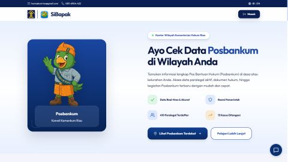
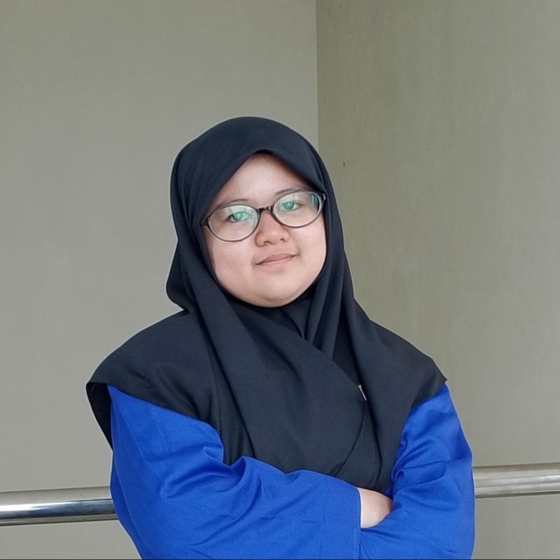

SiBapak · Web Platform

PROJECT 01 / ACADEMIC COLLABORATION
SiBapak
Sistem Informasi Posbankum Berdampak — a web-based platform developed collaboratively to support access to Posbankum-related information.
I'm Nadila Eriani Afsri, an Informatics Engineering student and software developer intern interested in creating practical digital experiences and exploring DevOps & cloud.

I'm an Informatics Engineering student at Politeknik Caltex Riau with a growing interest in software development and the ways technology can make information and services more accessible.
Through academic work and internship experience, I've had opportunities to contribute to real-world web projects. I enjoy making interfaces clear, useful, and approachable — and I'm continuing to explore the systems behind them.
A selection of projects from academic collaboration and hands-on development experiences.

Sistem Informasi Posbankum Berdampak — a web-based platform developed collaboratively to support access to Posbankum-related information.
Frontend development for a digital library portal for Kementerian Hukum Riau, focusing on accessible browsing, book discovery, and member-facing experiences.
My journey so far blends classroom foundations with collaborative, real-world development.
Gaining experience with real-world software development and contributing to web-based projects in a government-service environment.
Building a foundation in technology and applying what I learn through academic and collaborative projects.
An evolving set of interests shaped by the projects I work on. I care about learning, not collecting buzzwords.
Responsive interfaces, information architecture, and usable web experiences.
Connecting product needs with practical web-based solutions.
Actively learning more about development workflows and server-side infrastructure.
Working with others to translate ideas into thoughtful, usable results.
Interested in working together, sharing ideas, or discussing opportunities? I'd love to connect.